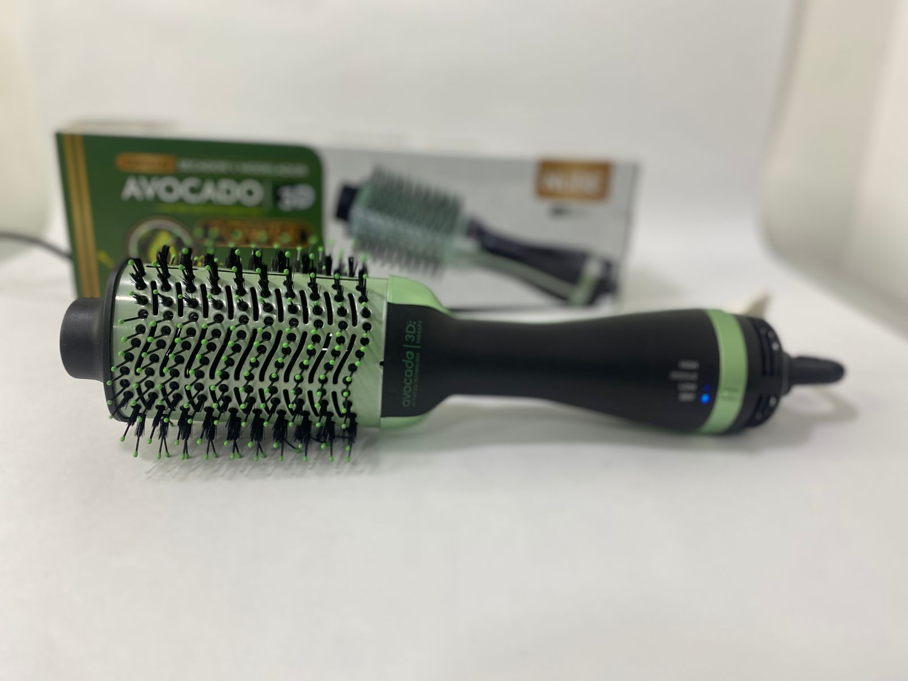
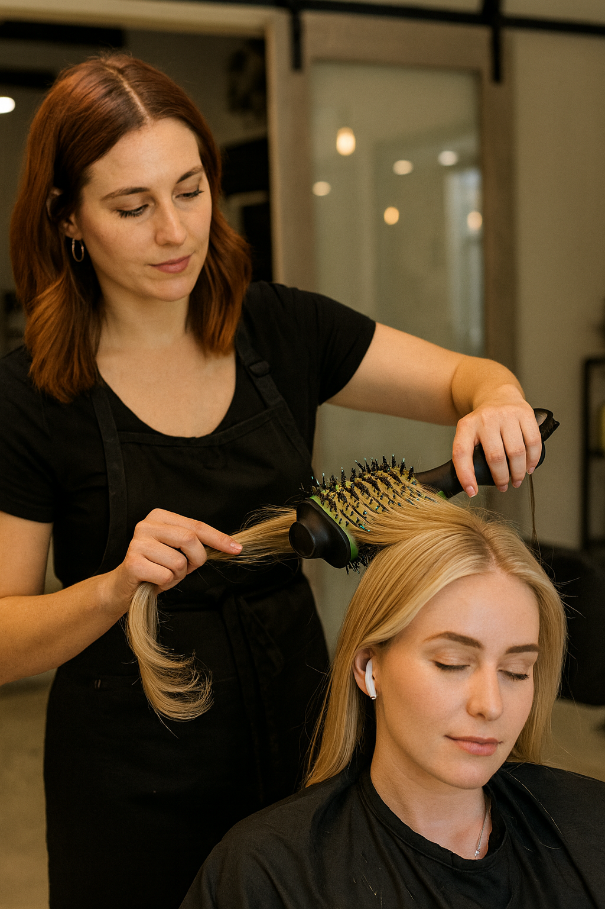
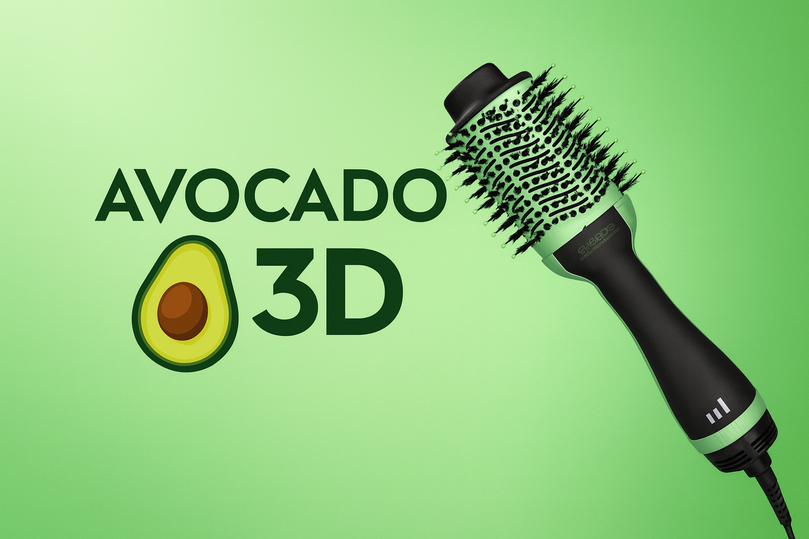

Inicio > Electronica,hogar > Cepillo Secador De Aguacate Nube



Ver video del producto
Descripción
Transforma tu rutina capilar: Olvídate de procesos largos y resultados imperfectos. El Cepillo Secador Profesional NUBE combina el secado y el cepillado en un solo paso, ofreciendo un alisado suave, volumen controlado o ondas naturales en minutos. Su tecnología avanzada no solo estiliza, sino que cuida tu cabello, dejándolo más liso, brillante y manejable desde la primera pasada.
Beneficios que notarás al instante
Estilizado 2 en 1: Seca y da forma a tu cabello simultáneamente, reduciendo el tiempo de peinado a la mitad. Perfecto para mañanas ajetreadas.
Pelo liso y sin frizz: La tecnología de iones negativos neutraliza la electricidad estática, sella la cutícula y domina el cabello más rebelde para un acabado impecable y duradero.
Calor inteligente y protector: El revestimiento de cerámica con extractos de aguacate distribuye el calor de manera uniforme y suave, minimizando el daño por calor. Los 3 niveles de temperatura ajustable te permiten adaptarlo a tu tipo de cabello (fino, normal, grueso/rebelde).
Comodidad y seguridad total: La punta fría evita quemaduras en el cuero cabelludo y facilita el manejo de mechones. Su cable giratorio de 1.30m evita enredos para una experiencia de peinado fluida.
🚀 Rendimiento profesional en casa:
Potencia óptima de 1300W: Proporciona calor rápido y eficiente para un secado veloz sin comprometer la salud capilar.
Calentamiento exprés: Listo para usar en menos de 30 segundos.
Diseño universal: Voltaje de 110v-240v y 50-60Hz. Llévalo de viaje y úsalo en cualquier país sin necesidad de convertidor.
🎯 Ideal para:
Quienes buscan ahorrar tiempo sin sacrificar un acabado profesional.
Personas con cabello fino, encrespado o difícil de manejar.
Uso doméstico y en salones de belleza. Garantiza resultados consistentes y de alta calidad.
📦 Incluye:
1 Cepillo Secador Profesional NUBE.
Manual de usuario.
Consigue un cabello de salón todos los días, de forma rápida y sin esfuerzo. ¡El Cepillo Secador NUBE es tu aliado definitivo para un peinado perfecto!

Reseñas
Muy práctico y deja el cabello muy suave.
Buen rendimiento y apariencia profesional.
La tecnología iónica es notoria, recomendable.